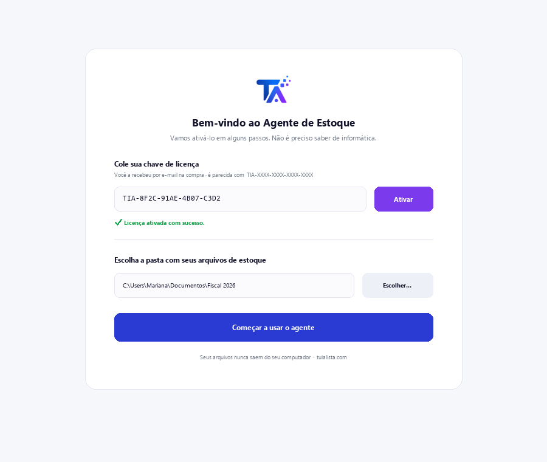
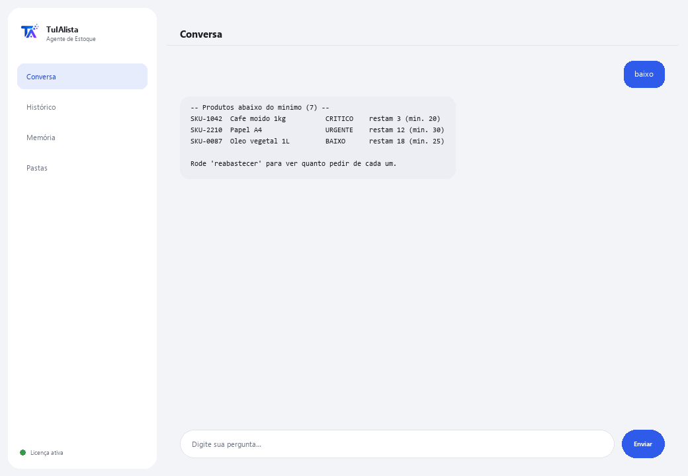

Agente de Estoque
Descubra o que reabastecer, quanto vale seu estoque e onde está capital parado — em segundos.
O que resolve e o que você precisa?
Ter estoque é um equilíbrio: se falta, você perde vendas; se sobra, tem dinheiro parado. Revisar isso à mão em planilhas é cansativo e quase ninguém faz a tempo. Este agente transforma seus arquivos de estoque em um painel de controle de compras e capital.
- Você precisa: sua chave de licença (TIA-XXXX-XXXX-XXXX-XXXX) e a pasta com seus arquivos de estoque (Excel ou CSV). Nada de Python nem conhecimento técnico.
- Primeiro resultado em menos de 5 minutos: instala, ativa, escolhe sua pasta e roda baixo para ver qual produto está acabando.
- Os dados do seu negócio nunca saem do seu computador — a análise roda localmente.
soporte@tuialista.com ou acesse tuialista.com/soporte — normalmente respondemos no mesmo dia útil.1 O que este agente faz
Você aponta para a pasta com seus arquivos de estoque e ele:
- Lê (Excel .xlsx e CSV), reconhecendo automaticamente as colunas (em português ou inglês).
- Detecta produtos abaixo do mínimo e sua urgência.
- Sugere quanto reabastecer de cada produto (com base no giro ou em um valor padrão).
- Calcula o valor total do estoque, ao custo e ao preço de venda, por categoria e fornecedor.
- Identifica estoque parado (sem movimento) que imobiliza capital.
- Classifica produtos por análise ABC (onde está concentrado o valor).
- Detecta excesso de estoque.
- Responde suas perguntas: “o que devo reabastecer primeiro?”
O resultado: você sabe o que comprar, o que liberar e onde está seu dinheiro, em segundos.
2 Instalação (2 minutos)
Para Windows. Não precisa de internet o tempo todo nem enviar nada para a nuvem.
Baixe o instalador em tuialista.com/descargar (agente Estoque) e abra-o. Ele cria um atalho na sua área de trabalho com o logo — não precisa de Python nem terminal.
Dê duplo clique no novo ícone. Cole sua chave de licença (você a recebeu por e-mail na compra) e clique em Ativar. Você verá um check verde quando for válida.
Selecione a pasta com seus arquivos de estoque e clique em Começar a usar o agente. Na próxima vez ele abre direto — lembra sua chave e sua pasta.

3 Como usar
O agente abre uma janela de chat, como um app de mensagens — não é uma tela preta de programador. Você escreve seu comando ou pergunta na caixa de texto abaixo, clica em Enviar (ou Enter), e a resposta aparece como uma mensagem, igual nesta imagem real:

Os comandos a seguir são as palavras que você pode escrever nessa mesma caixa de texto:
> baixo [limite]Produtos com estoque igual ou menor que o mínimo (ou o limite que você indicar), ordenados por urgência (CRÍTICO / URGENTE / BAIXO) e com dias restantes estimados se houver giro. Ex.: baixo 5.
> reabastecerPara cada produto baixo, sugere quanto pedir (com base no giro para ~30 dias, ou um valor padrão) e estima o custo.
> valorValor total ao custo e ao preço de venda, margem potencial e detalhamento por categoria e fornecedor.
> parado [dias]Produtos com estoque mas sem movimento nos últimos N dias (90 por padrão), ordenados por valor imobilizado. Ex.: parado 120.
> abcClassificação A/B/C (Pareto) por valor de estoque: os “A” concentram a maior parte do valor e merecem mais atenção.
> excessoProdutos com estoque muito acima do mínimo e o capital preso nesse excesso.
> pergunta livre?Escreva qualquer dúvida em linguagem natural, ex.: quais produtos da categoria bebidas estão acabando?
> sairEncerra a sessão (exit também funciona).
Quer ver as 20 receitas completas com um exemplo real de cada uma? Consulte o Catálogo de receitas — um documento separado por ser extenso: catalogo_recetas.pdf junto com este manual, ou a versão interativa em tuialista.com/guia/inventario/recetas.
4 Exemplos de uso comum
A compra da semana
baixo → reabastecer — você vê o que falta e quanto pedir, com o custo estimado.
Liberar dinheiro parado
parado 90 → excesso — você identifica o capital parado em produtos sem movimento ou com excesso.
Focar sua atenção
abc — você sabe quais produtos “A” cuidar mais porque concentram o valor.
Uma consulta pontual
qual é o valor total do meu estoque ao custo?
5 Perguntas frequentes
Meus dados são enviados para a internet?
Quais formatos ele aceita?
Preciso nomear minhas colunas de forma exata?
Ele realmente “prevê” quando reabastecer?
Preciso da coluna de giro ou de última saída?
Em que idioma ele responde?
Ele modifica meus arquivos?
Posso mudar a pasta de dados?
Os cálculos são exatos?
Ele pode ler vários arquivos?
6 Solução de problemas
Diz “CSV/XLSX sem colunas reconhecidas”
Não carrega um .xlsx
Diz “Licença inválida” ou pede para reconectar
“Nenhum provedor de IA configurado”
Nenhuma dessas soluções resolveu seu problema? Escreva para nós diretamente — teremos prazer em revisar com você.
soporte@tuialista.com ou acesse tuialista.com/soporte — normalmente respondemos no mesmo dia útil.7 Privacidade e confidencialidade
Os dados do seu negócio nunca saem do seu computador.
- O agente lê e analisa seus arquivos localmente, no seu próprio computador. Não os envia para nenhum servidor.
- Todos os cálculos (estoque baixo, valor, ABC, excesso, estoque parado) acontecem no seu computador.
- A única coisa que trafega pela internet é: (1) uma verificação de que sua licença está ativa — que não inclui seus dados —, e (2) ao fazer uma pergunta livre, um resumo do estoque relevante é enviado ao motor de IA para redigir a resposta.